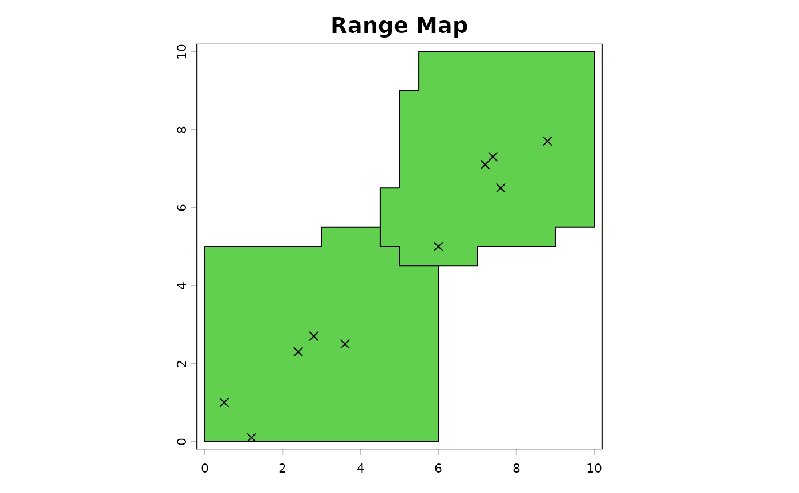

gbif.range: Tools for GBIF Retrieval and Ecoregion-Based Species Range Mapping
Source:R/gbif.range-package.R
gbif.range-package.Rdgbif.range provides a workflow to retrieve occurrence records from
GBIF, clean and filter them for spatial analyses, assemble or download
ecoregion layers, generate ecologically informed species range maps, and
evaluate the resulting maps against independent data.
Details
The package is designed around a typical workflow: (1) inspect or download
GBIF records with get_gbif_count() and get_gbif(),
(2) retrieve taxonomic information with get_status(),
(3) load packaged ecoregions with read_ecoreg() or create custom ones
with make_ecoreg(), (4) build range maps with get_range(),
and (5) evaluate those maps with evaluate_range() or
cv_range().
Additional helpers include get_doi() for creating GBIF-derived
dataset DOIs, obs_filter() for grid-based thinning,
make_tiles() for splitting study extents into GBIF-ready polygons,
and a disk-based workflow built around split_gbif_by_species(),
species_csvs_to_ranges(), and read_range_rds() for very large
downloaded GBIF tables.
Examples
# -------------------------------------------------------------------------
# 1. Minimal in-memory workflow with custom ecoregions
# -------------------------------------------------------------------------
# Create two simple environmental layers on a small synthetic study area.
r1 <- terra::rast(ncols = 20, nrows = 20, xmin = 0, xmax = 10,
ymin = 0, ymax = 10)
terra::values(r1) <- rep(seq(0, 1, length.out = 20), each = 20)
r2 <- terra::rast(r1)
terra::values(r2) <- rep(seq(0, 1, length.out = 20), times = 20)
env <- c(r1, r2)
# Derive custom ecoregions and define a small occurrence table in memory.
eco <- make_ecoreg(env = env, nclass = 4)
#> CLARA algorithm processing...
#> Generating polygons...
occ <- data.frame(
decimalLongitude = c(0.5, 1.2, 2.4, 3.6, 2.8, 6.0, 7.2, 7.4, 7.6, 8.8),
decimalLatitude = c(1.0, 0.1, 2.3, 2.5, 2.7, 5.0, 7.1, 7.3, 6.5, 7.7)
)
# Build the range directly from the occurrence table and ecoregions.
range_obj <- get_range(
occ_coord = occ,
ecoreg = eco,
verbose = FALSE
)
# Plot the predicted range and overlay the occurrence points.
terra::plot(range_obj$rangeOutput, col = 3, main = "Range Map")
graphics::points(occ, pch = 4)

if (FALSE) # nolint: error.
# -------------------------------------------------------------------------
# 2. Typical online workflow with GBIF data
# -------------------------------------------------------------------------
# Download GBIF occurrences for one species.
obs <- get_gbif("Panthera tigris", grain = 25)
# Inspect the GBIF backbone interpretation used by the package.
status <- get_status("Panthera tigris")
status
#> canonicalName rank gbif_key scientificName
#> 5219416 Panthera tigris SPECIES 5219416 Panthera tigris (Linnaeus, 1758)
#> 4969819 Felis tigris SPECIES 4969819 Felis tigris Linnaeus, 1758
#> gbif_status Genus Family Order Class Phylum IUCN_status
#> 5219416 ACCEPTED Panthera Felidae Carnivora Mammalia Chordata ENDANGERED
#> 4969819 SYNONYM Panthera Felidae Carnivora Mammalia Chordata ENDANGERED
#> sp_nameMatch
#> 5219416 INPUT
#> 4969819 EXACT
# Load a packaged terrestrial ecoregion layer and build the range.
eco_terra <- read_ecoreg("eco_terra")
#> eco_terra directory does not exist or contains no .shp files.
#>
#> [/home/runner/work/gbif.range/gbif.range/docs/reference/inst/extdata/downloads/eco_terra/eco_terra] will be created and data will be downloaded.
#>
#> Downloading data...
#> Preparing to download ecoregion eco_terra
#> data file to: /home/runner/work/gbif.range/gbif.range/docs/reference/inst/extdata/downloads
#> Downloaded: eco_terra
#> Description: Terrestrial Ecoregions of the World
#> Unzipped: eco_terra
#> saved to: /home/runner/work/gbif.range/gbif.range/docs/reference/inst/extdata/downloads/eco_terra
#> removed: eco_terra.zip
tiger_range <- get_range(
occ_coord = obs,
ecoreg = eco_terra,
ecoreg_name = "ECO_NAME"
)
#> Error: object 'obs' not found
# Plot the predicted terrestrial range and the GBIF occurrences.
terra::plot(
tiger_range$rangeOutput,
col = 3,
main = paste("Range:", obs$scientificName[1]))
#> Error in h(simpleError(msg, call)): error in evaluating the argument 'x' in selecting a method for function 'plot': object 'tiger_range' not found
graphics::points(
obs$decimalLongitude,
obs$decimalLatitude,
pch = 4,
col = rgb(1, 0, 1, 0.2)
)
#> Error: object 'obs' not found
# \dontrun{}
if (FALSE) { # \dontrun{
# -------------------------------------------------------------------------
# 3. Large downloaded GBIF table already stored on disk
# -------------------------------------------------------------------------
if (requireNamespace("data.table", quietly = TRUE)) {
# Use the bundled GBIF-style example file as a stand-in for a large download.
gbif_file <- system.file("extdata", "occ_example_2sps.csv", package = "gbif.range")
# Keep each stage in its own temporary folder so outputs are easy to inspect.
split_dir <- file.path(tempdir(), "gbif_pkg_split")
occ_dir <- file.path(tempdir(), "gbif_pkg_occ_min")
range_dir <- file.path(tempdir(), "gbif_pkg_ranges")
# Remove earlier temporary outputs so rerunning the example starts cleanly.
unlink(split_dir, recursive = TRUE)
unlink(occ_dir, recursive = TRUE)
unlink(range_dir, recursive = TRUE)
# Split the input table into one occurrence file per speciesKey without
# loading the full file into memory.
split_summary <- split_gbif_by_species(
input_file = gbif_file,
outdir = split_dir,
chunk_size = 10,
sep_in = "\t",
sep_out = "\t",
overwrite = TRUE,
verbose = FALSE
)
split_summary[, c("species_name", "n_records", "species_file")]
# Use the packaged terrestrial ecoregions for the batch range step.
# species_csvs_to_ranges() will resolve "eco_terra" with read_ecoreg().
range_summary <- species_csvs_to_ranges(
species_dir = split_dir,
ecoreg = "eco_terra",
ecoreg_name = "ECO_NAME",
outdir = range_dir,
occ_outdir = occ_dir,
occ_save_as = "tsv",
range_save_as = "rds",
sep_in = "\t",
overwrite = TRUE,
degrees_outlier = 30,
clust_pts_outlier = 2,
buff_width_point = 1,
buff_incrmt_pts_line = 0.1,
buff_width_polygon = 1,
format = "SpatVector",
verbose = FALSE
)
range_summary[, c("species_name", "n_points", "range_file")]
# Read the saved ranges back from disk and plot both species together.
range_one <- read_range_rds(range_summary$range_file[1])
range_two <- read_range_rds(range_summary$range_file[2])
combined_ext <- terra::ext(
min(terra::xmin(range_one$rangeOutput), terra::xmin(range_two$rangeOutput)),
max(terra::xmax(range_one$rangeOutput), terra::xmax(range_two$rangeOutput)),
min(terra::ymin(range_one$rangeOutput), terra::ymin(range_two$rangeOutput)),
max(terra::ymax(range_one$rangeOutput), terra::ymax(range_two$rangeOutput))
)
terra::plot(combined_ext, col = NA, legend = FALSE)
terra::plot(range_one$rangeOutput, col = rgb(0.1, 0.6, 0.2, 0.5), add = TRUE)
terra::plot(range_two$rangeOutput, col = rgb(0.8, 0.3, 0.1, 0.5), add = TRUE)
}
} # }